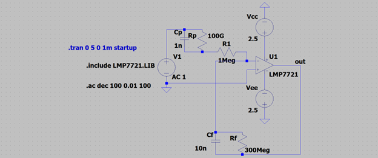
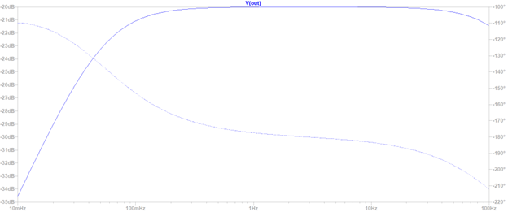

Development of a Solid-State Continuous BP Monitor
Active material actuation and pulse wave analysis replacing traditional pneumatic cuffs.
The Objective
To design a continuous non-invasive blood pressure (CNIBP) monitor that eliminates bulky pneumatic pumps. The system utilizes an active-material elastic sleeve and embedded piezo-electric sensors to track pulse wave amplitude in real-time.
1. Analog Front-End (AFE) Design
Piezo-electric transducers generate high-impedance charge signals proportional to arterial displacement. To prevent signal loading, I configured an LMP7721 precision amplifier as a charge-to-voltage converter. The hardware AC-coupling acts as a tuned bandpass filter with a sharp cutoff below 0.1 Hz, cleanly rejecting static baseline pressure while passing the 1-2 Hz human heartbeat frequencies.

Fig 1: LMP7721 precision charge amplifier configuration for high-impedance piezoelectric interfacing.

Fig 2: AC Analysis Bode plot demonstrating a highly tuned bandpass filter with a sharp 0.1 Hz cutoff.
2. Digital Logic & Patient Safety
The system executes a deterministic 100 Hz sampling routine via Timer1 Interrupts, tracking local maxima and minima to calculate real-time pulse amplitude.
Hardware Fail-Safe: Given the compressive nature of the active material, I integrated a hardware Watchdog Timer (WDT) with a 500ms timeout. In the event of a firmware exception or sensor failure, the WDT triggers a global hardware reset, immediately dropping the PWM output to 0% to relax the cuff and ensure patient safety.
3. Mechanical Architecture
The mechanical build relies on a multi-layer architecture. The inner thermoplastic polyurethane (TPU) sleeve features recessed pockets to ensure a flush, zero-gap mechanical coupling with the skin. Actuation is driven by Shape Memory Alloy (SMA) wires routed along a rigid polymer spine, converting linear contraction into uniform circumferential pressure.

Fig 3: SolidWorks CAD renders of the TPU sleeve and integrated Control Pod.